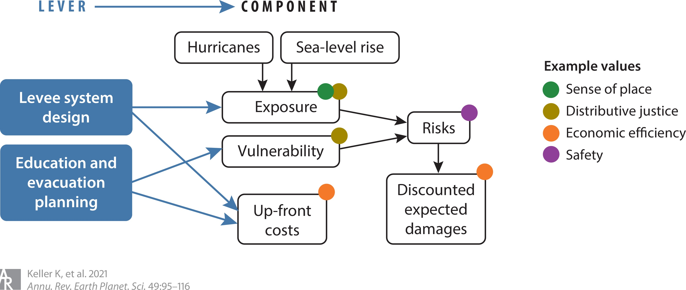

Lecture (Remote)
Wednesday, March 11, 2026
Today
Subjectivity in Decision-Making
Multiple Objectives
Equity
Logistics
In Weeks 5–8, we built a rigorous decision framework:
Every BCA embeds value judgments:
Some conversions feel morally unacceptable (Daw et al., 2015):
These are taboo trade-offs — converting them to dollars feels wrong, even if the math works.

Keller et al. (2021)
Today
Subjectivity in Decision-Making
Multiple Objectives
Equity
Logistics
After Hurricane Harvey, Harris County passed a $2.5 billion flood bond (2018). Limited Resilience Trust funds must be allocated across 200+ competing projects.
The question: which projects get funded?
Chat question: Give an example for
where two important things are genuinely hard to compare as apples to apples.
HCFCD’s 2022 framework scores each project on seven criteria (Harris County Flood Control District, 2022):
These may conflict, leading to trade-offs.
Weighted sum: Collapse into one number \[w_1 \cdot \text{cost} + w_2 \cdot \text{risk} + w_3 \cdot \text{equity}\] Simple, but hides the trade-offs.
Satisficing / constraints: Set minimum thresholds (“\(BCR \geq 1\)”) and optimize remaining objectives. Avoids explicit weighting but requires choosing thresholds.
Pareto analysis: Find solutions where no objective can improve without worsening another. Reveals trade-offs without choosing weights. (We’ll formalize this in Week 12.)
Today
Subjectivity in Decision-Making
Multiple Objectives
Equity
Logistics
MCDA asks us to handle multiple competing objectives. What do we do when one of those objectives is “be fair”?
Chat question: Where have you heard people talking about equity in climate risk or infrastructure?
How to account for equity is actively contested in law and policy:
Justice40 (Biden, 2021): 40% of benefits from certain federal climate investments must flow to disadvantaged communities — Equity operationalized via investment targeting; specifies outcome + characteristics, but leaves principle implicit
Executive Order 14173 (Trump, 2025): Prohibits federal agencies from using protected characteristics (race, sex) in decision-making — Restricts which characteristics axis options are legally available for federal programs
Chat question: When you hear “equity” or “environmental justice,” what comes to mind?
How should we evaluate whether a distribution is fair? Some key frameworks:
Worst-first (Rawlsian maximin): prioritize the least well-off — The same principle as the maximin rule from your exam, now applied to people
Maximize aggregate welfare (utilitarian): best average outcome — This is what standard BCA does
Restore past wrongs (reparative / corrective justice): address historical injustice — Redlining, discriminatory flood insurance, and underinvestment shaped today’s disparities
Equal treatment (egalitarian): same outcomes or resources for everyone
Sufficiency (sufficientarian): everyone gets “enough” — a minimum threshold
On the exam, you applied maximin to uncertain scenarios:
\[a^* = \arg\max_a \min_s \; U(a, s)\]
Choose the action whose worst-case outcome is best.
The Rawlsian framework applies the same logic to people:
\[\text{choose the policy that most benefits the least well-off person}\]
Same structure — “worst case” is now the worst-off individual.
Before we can measure equity, we must answer four questions (Pollack et al., 2024):
| Axis | Question | Options |
|---|---|---|
| Outcome | Equity in what? | Exposure, risk, funding, benefits, recovery |
| Scale | At what level? | Individual, neighborhood, city, region |
| Characteristics | Across whom? | Income, race, environmental burden, history |
| Principle | Why is that unfair? | Worst-first, utilitarian, reparative, egalitarian, sufficientarian |
The same program can look equitable or inequitable depending on which axes you choose:
Policy A: protect densest district
Policy B: protect poorest district
Pollack et al. (2025) studied how federal funding allocation rules affect equity:
HCFCD’s framework is a local example: cost-per-structure (30%) vs. SVI (20%) vs. cost-per-person (15%) (Harris County Flood Control District, 2022)
Equity is not only about outcomes — it’s also about process (Fletcher et al., 2022):
Simply inviting marginalized communities to meetings is not enough if power dynamics remain unchanged.
Today
Subjectivity in Decision-Making
Multiple Objectives
Equity
Logistics
These approaches work together — they are not alternatives:
None of these resolve value questions — they make the choices visible and tractable.
James Doss-Gollin